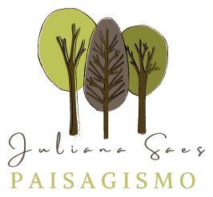
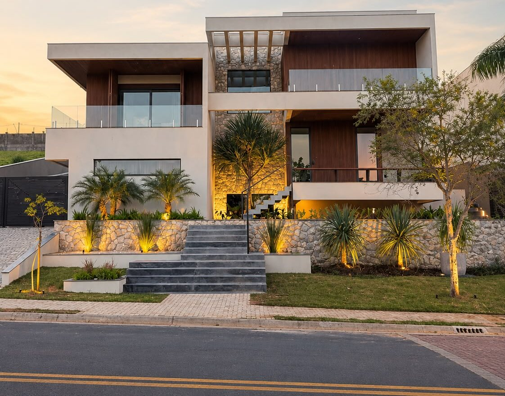

Paisagismo com assinatura
Técnica de projeto, sensibilidade de quem conhece cada planta e a atenção de um atendimento feito de perto.

A paisagista por trás de cada projeto
Paisagista com mais de quinze anos de experiência, Juliana Saes construiu sua trajetória unindo o conhecimento botânico ao rigor do projeto técnico. Formada em paisagismo, especializou-se em projetos residenciais de alto padrão e em jardins tropicais contemporâneos.
À frente do escritório, conduz pessoalmente cada projeto: da primeira visita ao acompanhamento da implantação, em diálogo próximo com clientes, arquitetos e equipes de obra.
Juliana Saes
“Um bom jardim conversa com a arquitetura, respeita a luz e o clima, e acompanha a rotina de quem vive ali.”Juliana Saes
O que guia o nosso trabalho
Valores que se repetem em todos os projetos, do jardim de entrada ao grande parque residencial.
Natureza em primeiro lugar
Valorizamos espécies adaptadas ao clima local e a biodiversidade, para jardins mais saudáveis e duradouros.
Desenho sob medida
Nenhum projeto se repete. Cada jardim é desenhado para a arquitetura, o terreno e a família que vive ali.
Discrição e confiança
Atendimento reservado, cronogramas claros e respeito absoluto à privacidade de cada cliente.
Uma história que cresce
Primeiros jardins
Início da atuação em projetos residenciais e manutenção de jardins na região de Campinas.
Projeto técnico
Todos os projetos passam a ser desenvolvidos em AutoCAD, com documentação completa para obra.
Visualização 3D
Incorporação de imagens 3D realistas para apresentar cada projeto antes da execução.
Juliana Saes Paisagismo
Escritório dedicado a projetos autorais de alto padrão, em parceria com arquitetos da região.
Campinas, região e projetos à distância
Atendimento presencial em Campinas, Valinhos, Vinhedo, Indaiatuba e cidades vizinhas. Para outras regiões, desenvolvemos o projeto a distância, com visitas técnicas agendadas nas etapas principais.
Falar com o escritório
Vamos projetar o seu jardim?
Conte um pouco sobre o seu espaço e o que você imagina. Cada projeto começa com uma boa conversa.